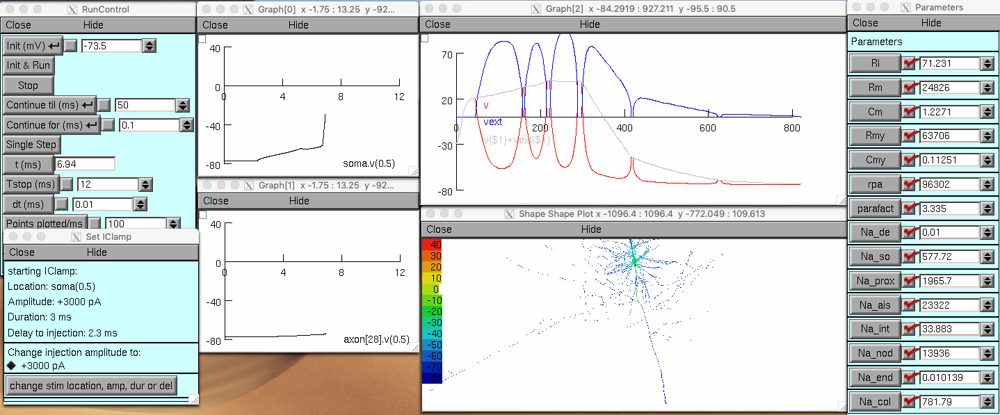

This is the readme for the model associated with the paper:
Cohen CCH, Popovic MA, Klooster J, Weil M, Mobius W, Nave K, Kole MHP
(2020) Saltatory Conduction along Myelinated Axons Involves a
Periaxonal Nanocircuit. Cell
This NEURON code was contributed by CCH Cohen.
Startup options:
compilemod.hoc
- Compile or recompile mod files.
- Required for running any model.
- Run once after setup or download to a new machine.
openmodel.hoc
- View and test the model.
- Try different parameter combinations.
- Broadest option for model interaction.
A sample screenshot of the model mid simulation:

resetmode.hoc
- Switch mode from passive to active and vice versa.
resetses.hoc
- Reset session data to mode-appropriate default options.
resetaxon.hoc
- Switch between model axon options.
- Available options include no myelin, single cable and double cable.
modeltype.type
- Describes current model setup. Composed of three parts separated by dashes.
- First part: active ("act") or passive ("pas").
- Second part: selected cellular location(s) of interest combination. SO = soma, AX = axon, DE = dendrite.
- Third part: axon model type. NOMY = no myelin, SC = single cable, DC = double cable, etc.
- Updated after opening openmodel.hoc.
Usage note: To restore colour mapping if reshaping the shapeplot, select "Shape Plot" by right clicking in the plot window.